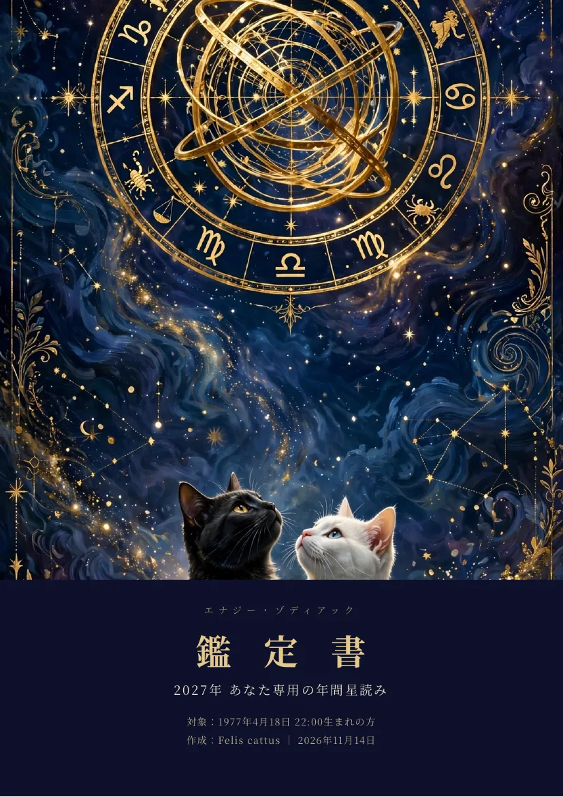
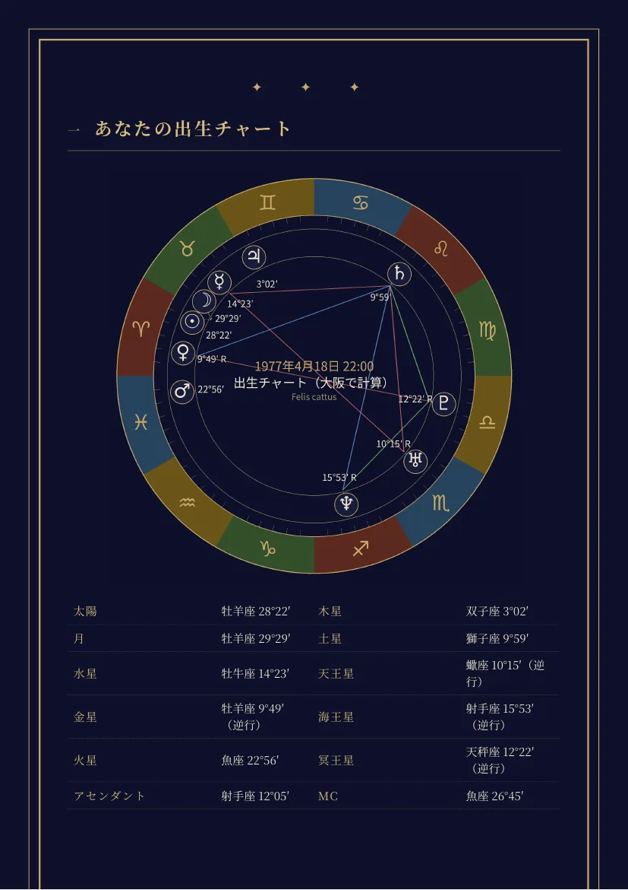
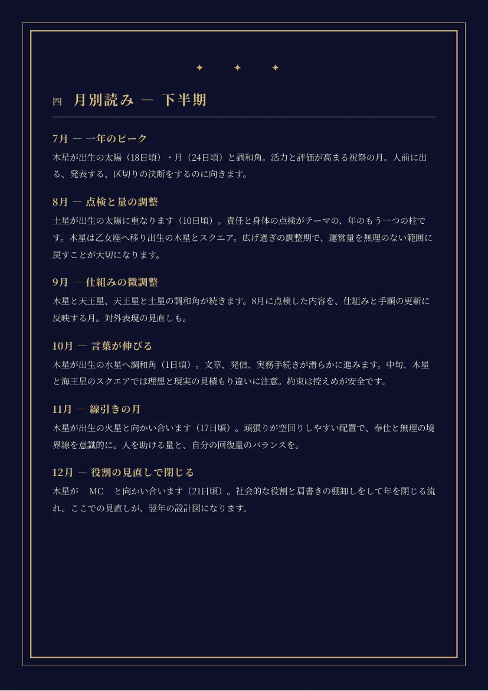
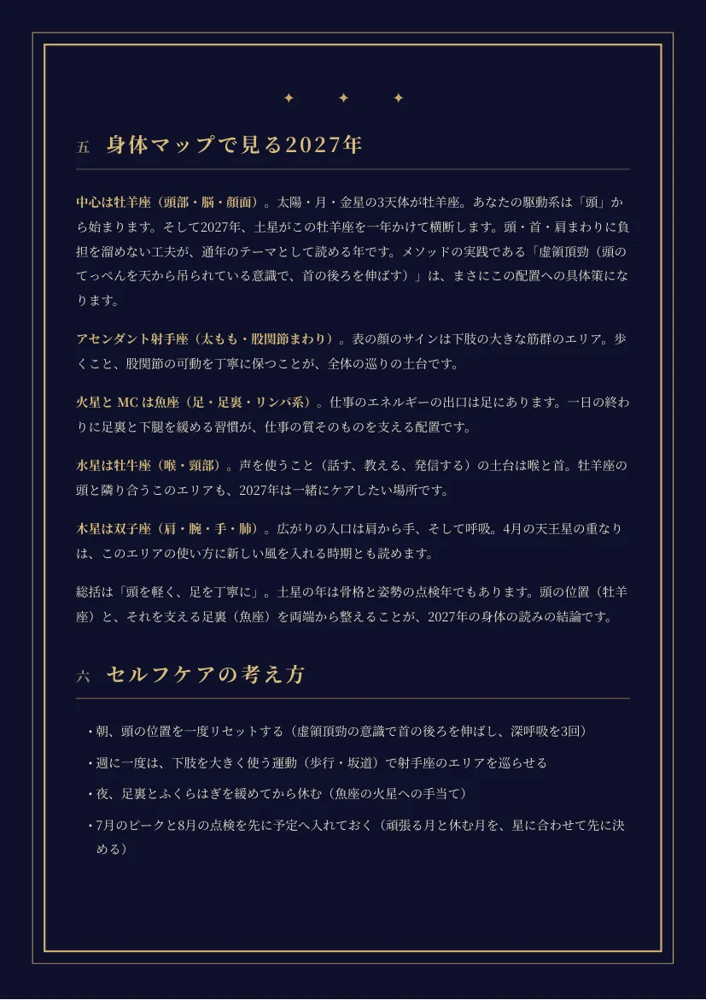

鑑定・商品
Felis cattus の自社商品は note で販売しています（決済・受け渡しは note の仕組みを使います）。
2027年 年間読み 鑑定書（受注生産）¥2,222
出生図＋2027年のトランジットを読むA4・8ページの鑑定書PDF。月10名まで／納期7日以内。注文はnoteのチケット記事から、申込フォームで出生日時・場所をお聞きします。
鑑定書の見本
年間読み鑑定書のサンプル（1977年4月18日生まれの方の例）です。構成は、表紙／出生チャート図と配置表／チャートの骨格／2027年全体テーマ／月別読み／身体マップとセルフケア／おわりに、の全8ページ。星の位置はNASA JPLの天文暦で計算し、文章中の日付・サイン・角度は納品前に検証ツールで照合します。




お預かりする情報について
鑑定のお申し込みでは、申込フォームで生年月日・出生時刻・出生地と、納品先のメールアドレスをお聞きします。これらの情報は、鑑定書の制作と納品のためだけに使います。第三者へ提供することはなく、ほかの目的に使うこともありません。鑑定の内容や、お申し込みがあったこと自体を公開したり、宣伝に使ったりすることもありません。制作後の情報の削除をご希望の場合は、メールでご連絡いただければ対応します。
毎日の発信
note（毎日の星読み）／ Instagram @felis.cattus222 ／ Threads @felis.cattus222 ／ X @felis_cattus222